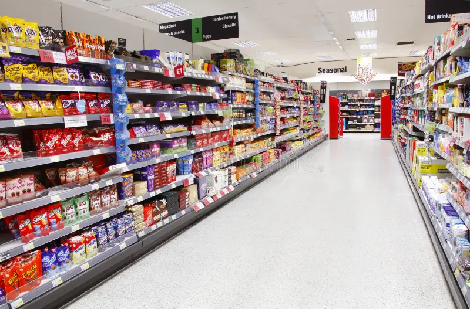
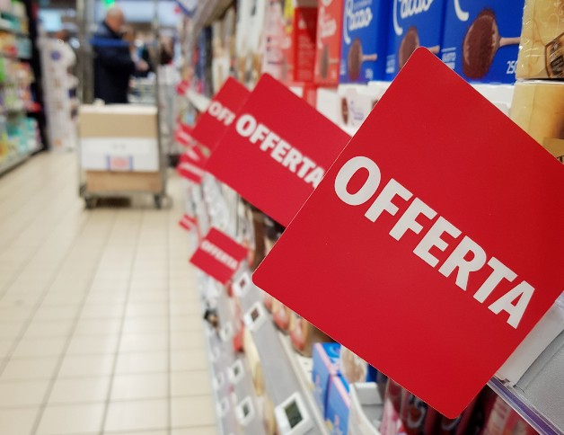
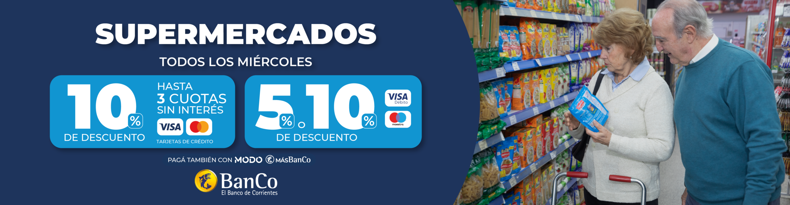

¿Quiénes somos?
Somos una empresa de supermercado, con 26 sucursales en todo el pais, encargada de brindarle los mejores pruductos comerciales al cliente. Tenemos todo lo que ustedes necesita, gondolas de mercaderia, verduleria, carniceria e incluso una seccion de electrodomesticos.
¿Como nació la empresa?
La historia del supermercado se remonta al año 2010, cuando los socios Juan Lopez y Lautaro Lopez deciden ampliar su almacén del barrio para convertirla en una empresa de mayor calibre. En el año 2016 supermercado Lopecito ya era reconocido por sus grandes ventas en la ciudad de Buenos Aires, logrando $6.000.000 de dólares al año e incrementando sus ganancias anuales. Hoy en día, es reconocido en todo el país, y tiene 26 sucursales distribuidas en toda la Argentina, posicionándose así como uno de los supermercados más accesibles para la gente, y con lo mejores descuentos y precios bajos, manteniéndose así en el puesto n°3 de supermercados con mejores ingresos anuales del país.
¿Por qué a usted le conviene asociarse en Supermecado Lopez?
- disposicion de ofertas y precios bajos.
- Promociones bancarias
- Hasta 35% de descuento en alimentos y bebidas
- Productos frescos y en buen estado
- Envios 100% gratuitos a tu domicilio

Para aprovechar promociones puede registrarse aqui. Registrarse
Condiciones de la promocion
¿Cómo puedo acceder al beneficio?
Realizando una compra con tus tarjetas de crédito, débito y prepagas a través de MODO.
¿Dónde veo el descuento aplicado?
El reintegro lo verás acreditado en la cuenta de tu banco que elegiste comprar.
